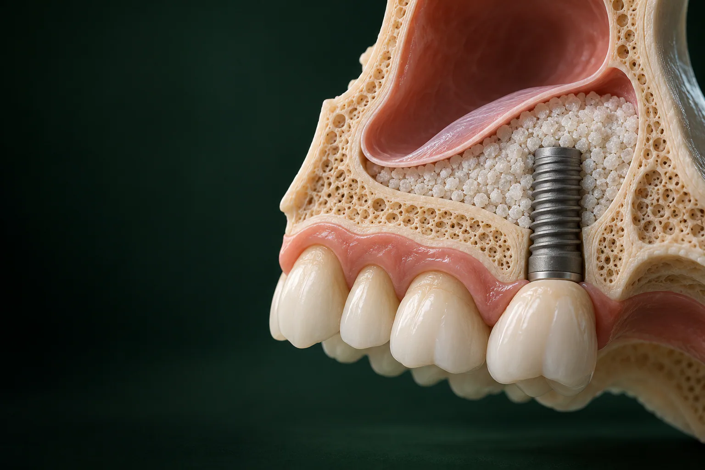

Консультация и КТ
Хирург-имплантолог осматривает полость рта и назначает КТ двух челюстей с пазухами. Снимок показывает высоту кости, толщину слизистой и состояние пазухи. При необходимости дополнительно делают панорамный снимок.

Синус-лифтинг верхней челюсти: это наращивание кости под дном гайморовой пазухи, когда её не хватает, чтобы поставить импланты вместо утраченных жевательных зубов.
Имеются противопоказания. Необходима консультация специалиста.
В клинике «Умная Медицина» (пос. Удельная, Раменский округ, в 5 минутах от Жуковского) операция стоит от 22 000 ₽ при закрытом методе и от 33 000 ₽ при открытом, по прайсу um-med.com. Лечение начинаем с КТ челюстей и пазух и цифрового 3D-плана со стоимостью по этапам.
Имеются противопоказания. Необходима консультация специалиста.
Над корнями премоляров и моляров верхней челюсти, обычно это 5–7-й зубы, находится гайморова, или верхнечелюстная, пазуха. Пока зубы на месте, жевательная нагрузка поддерживает кость. Когда зубов нет, кость постепенно убывает, дно пазухи опускается, и места для импланта остаётся всё меньше.
Суть операции такая: хирург приподнимает слизистую оболочку дна пазухи (её называют мембраной Шнайдера) и заполняет освободившееся пространство костным материалом. Со временем материал перестраивается, и в этой зоне можно закрепить имплант нужной длины. Научное название операции: субантральная аугментация.
Если совсем коротко, синус-лифтинг при имплантации зубов: это подготовка места, чтобы имплант стоял в собственной кости, а не упирался в пазуху. Подробнее о самой имплантации зубов: на отдельной странице.
Иногда операцию связывают с десной, но десна здесь только доступ: хирург работает с костной тканью под ней, поднимает дно пазухи и наращивает кость именно там, где будет стоять имплант.
Синус-лифтинг гайморовой пазухи делают только на верхней челюсти, потому что пазуха находится там. Если кости не хватает на нижней челюсти, применяют другие виды костной пластики.
Операция нужна, чтобы поставить имплант там, где под пазухой мало кости. Показание определяют по КТ: хирург оценивает высоту и ширину кости под дном пазухи и решает, хватит ли её для импланта. Пороговое значение зависит от ситуации и выбранного импланта. согласуем с врачом
Чаще всего кости не хватает, если:
Перед имплантацией важно, чтобы верхнечелюстная пазуха была здорова: в ней не должно быть активного воспаления. Если на КТ видны признаки синусита, сначала нужно лечение у ЛОР-врача и только потом операция. уточняем у клиники
Обязательно ли делать эту операцию? Нет, если кости хватает: тогда проводят обычную имплантацию. Имплантация без синус-лифтинга возможна и в других случаях:
Подходит ли вам такой вариант, хирург решает по КТ.
Два метода отличаются доступом к пазухе и тем, сколько кости можно нарастить. Какой подходит вам, хирург решает по КТ.
| Закрытый | Открытый (латеральный) | |
|---|---|---|
| Доступ | через ложе будущего импланта | через небольшое «окно» в боковой стенке челюсти |
| Дефицит кости | небольшой | выраженный |
| Имплант в ту же операцию | обычно да | сразу или после формирования кости |
| Длительность | меньше | больше |
| Восстановление | обычно легче | дольше, отёк заметнее |
| Цена | от 22 000 ₽ | от 33 000 ₽ |
согласуем с врачом
Закрытый метод менее травматичен, чем открытый, потому что бокового доступа нет. Хирург формирует ложе для импланта и через него специальными инструментами, остеотомами, аккуратно приподнимает дно пазухи вместе с мембраной. В образовавшееся пространство вводят костный материал, и обычно в ту же операцию ставят имплант.
Метод подходит, когда кости не хватает немного. уточняем у клиники
Открытый синус-лифтинг в стоматологии применяют при выраженной атрофии кости. Операция проходит так: в боковой стенке челюсти делают небольшое окно, бережно отслаивают и приподнимают мембрану пазухи, пространство под ней заполняют костным материалом, окно закрывают барьерной мембраной и накладывают швы.
Имплант ставят сразу, если оставшаяся кость позволяет его прочно закрепить, или после того, как сформируется новая кость. уточняем у клиники
Стоимость зависит прежде всего от метода и объёма наращивания. Закрытый метод стоит от 22 000 ₽, открытый дороже, от 33 000 ₽: доступ шире, и материала обычно нужно больше. Цены: по прайсу um-med.com, актуальны на 17.10.2026.
уточняем у клиники
Имеются противопоказания. Необходима консультация специалиста.
Состав цены операции хирург объяснит на консультации. уточняем у клиники. Материал для наращивания и мембраны в прайсе стоят отдельными строками; сколько их понадобится, хирург определит по КТ зубов и челюстей. уточняем у клиники
Чем больше объём работы, тем выше итоговая сумма. Она зависит от:
Точная сумма для вашего случая будет в плане лечения: хирург составляет его после КТ и фиксирует стоимость по этапам. Учтите, что операция, лишь часть бюджета: потом понадобятся имплант и коронка на имплант, их цены тоже есть в таблице.
При оплате лечения в день консультации: скидка 10% уточняем у клиники. Лечение можно оплатить в рассрочку, а часть расходов вернуть через налоговую: подробнее на странице рассрочка и налоговый вычет.
По шагам лечение выглядит так:
Хирург-имплантолог осматривает полость рта и назначает КТ двух челюстей с пазухами. Снимок показывает высоту кости, толщину слизистой и состояние пазухи. При необходимости дополнительно делают панорамный снимок.
По КТ строят цифровой 3D-план: где встанут импланты и сколько кости нужно нарастить. План обсуждают на консилиуме с ортопедом и фиксируют стоимость по этапам.
О ней ниже.
Операцию проводят под местной анестезией.
Хирург получает доступ к дну пазухи, приподнимает мембрану, заполняет пространство под ней материалом, при необходимости закрывает зону барьерной мембраной и накладывает швы.
Назначают контрольные осмотры и снимают швы. уточняем у клиники
Импланты ставят по цифровому плану, при необходимости по хирургическому шаблону, сразу во время операции или после формирования кости. Затем делают коронку или протез.
Сроки и цену каждого этапа врач распишет в плане лечения.
Записаться на консультациюПорядок одинаков для обоих методов: различаются доступ и объём материала.
Перед операцией нужно пройти лечение кариеса и воспалений дёсен, сделать профессиональную чистку зубов и отказаться от курения на срок, который назовёт хирург. Обязательно расскажите врачу обо всех лекарствах, которые принимаете, особенно о препаратах, влияющих на свёртываемость крови. Если беспокоят хронический насморк или заложенность носа, сначала покажитесь ЛОР-врачу.
Имплантацию с синус-лифтингом проводят по-разному: имплант ставят в одну операцию с наращиванием кости или отдельным этапом. Выбор зависит от того, сколько собственной кости осталось под пазухой.
Одновременно. Так делают, если оставшейся кости хватает, чтобы имплант сразу держался прочно. Обычно это закрытая методика, но и при открытом доступе имплант иногда ставят в ту же операцию.
В два этапа. Сначала наращивают кость и ждут, пока она сформируется. Потом ставят имплант, а после его приживления: формирователь десны и коронку на имплант.
При синус-лифтинге используют те же импланты, что и при обычной имплантации: в клинике это системы Osstem, Straumann, Dentium и Riellen's. Подробнее: на странице импланты Osstem, Dentium, Straumann.
Длительность операции зависит от метода и числа зон: закрытый метод обычно занимает меньше времени, чем открытый. Сколько заживает зона и когда можно ставить имплант, хирург скажет по контрольному снимку.
| Этап | Что происходит | Срок |
|---|---|---|
| Операция | подъём мембраны, костный материал, швы | уточняем у клиники |
| Снятие швов | контрольный осмотр | уточняем у клиники |
| Заживление десны | проходят отёк и чувствительность | уточняем у клиники |
| Формирование кости, если имплант не ставили сразу | материал перестраивается в кость | уточняем у клиники |
| Приживление импланта | имплант срастается с костью | уточняем у клиники |
| Протезирование | формирователь десны, коронка или протез | уточняем у клиники |
Сроки индивидуальны. На них влияют метод, объём наращивания, общее здоровье и то, насколько точно пациент соблюдает рекомендации.
Наращивание кости: суть операции, поэтому от материала зависит, как формируется новая костная ткань. Кость для синус-лифтинга бывает разного происхождения:
| Материал | Что это | Особенности |
|---|---|---|
| Аутогенный | собственная кость пациента | хорошо перестраивается, но нужен забор кости из другой зоны |
| Ксеногенный | очищенный костный материал животного происхождения | медленно рассасывается и долго сохраняет объём |
| Аллогенный | обработанная донорская кость человека | не нужен забор собственной кости |
| Синтетический | искусственные гранулы на основе фосфатов кальция | свойства зависят от состава |
Сверху зону часто закрывают коллагеновой мембраной: она защищает материал и помогает кости формироваться.
В прайсе клиники есть ксеногенный костнозамещающий материал Bio-Oss (Швейцария) и мембраны Bio-Gide и Биопласт-дент. Клиника работает с оригинальными сертифицированными материалами. уточняем у клиники
Операцию не проводят или откладывают при:
Курение, относительное противопоказание: оно ухудшает заживление и повышает риск осложнений. Список не полный, окончательно решает врач после обследования, поэтому важно рассказать ему о хронических болезнях и лекарствах.
Осложнения синус-лифтинга возможны, как после любой операции. Основные риски:
Снижаем риски так: КТ и 3D-план до операции, лечение пазухи и зубов заранее, бережная техника и подробные рекомендации на период восстановления. Если что-то идёт не так, хирург объяснит варианты и дальнейший план.
Восстановление у каждого идёт по-своему, но проходит спокойнее, если точно соблюдать рекомендации хирурга. Сроки ниже ориентировочные, точные назовёт врач. согласуем с врачом
согласуем с врачом
Отёк обычно нарастает в первые дни, а затем спадает, на щеке может появиться синяк. Десна в зоне разреза какое-то время чувствительна и немного отёчна, это нормально.
Особенно мешает заживлению курение: никотин сужает сосуды и ухудшает питание тканей, а затяжка создаёт разрежение во рту. Поэтому от сигарет и вейпов лучше отказаться ещё до операции. Гигиену при этом не прекращайте: чистите зубы мягкой щёткой, аккуратно обходя швы, и пользуйтесь ополаскивателем, если его назначил врач.
Головная боль и тяжесть в области пазухи в первые дни бывают, подробнее: в вопросах ниже.
Операции и имплантацию проводят стоматологи-хирурги, имплантологи:
На этапе протезирования подключаются стоматологи-ортопеды Солодухин Евгений Викторович и Алиханова Светлана Андреевна. План лечения хирург и ортопед составляют вместе, поэтому заранее понятно, где встанут импланты и какой будет коронка или протез.
уточняем у клиники

Хирург, имплантолог
Имплантация, удаление зубов и подготовка к имплантации
Записаться к врачу
Хирург, имплантолог
Удаление зубов и имплантация, хирургия в сложных случаях
Записаться к врачу
Главный врач, ортопед
Протезирование и восстановление зубов, протезы на имплантах
Записаться к врачу
Ортопед
Восстановление зубов и протезирование, эстетичные коронки
Записаться к врачуРейтинг клиники на Яндекс Картах: 5,0 уточняем у клиники. Здесь публикуем только реальные отзывы пациентов, с их письменного согласия. Если отзывов именно об этой операции пока мало, рядом показываем отзывы об имплантации.
отзыв пациента
пример работы
уточняем у клиники
Не всегда, а только если по КТ под пазухой мало кости. При полной потере зубов иногда подходит другой протокол, например All-on-4 или All-on-6 с наклонными имплантами. Решает хирург по снимку.
Доступом и объёмом наращивания. Закрытый делают через ложе импланта при небольшом дефиците кости, открытый: через боковое окно при выраженной атрофии. Закрытый стоит от 22 000 ₽, открытый: от 33 000 ₽.
Да, если оставшейся кости хватает, чтобы имплант держался прочно. Обычно это закрытая методика. Иначе имплант ставят после формирования кости.
Длительность зависит от метода и числа зон: закрытый обычно проходит быстрее открытого. Когда снимут швы и когда можно ставить имплант, хирург скажет по контрольному осмотру и снимку. уточняем у клиники
Сморкаться, чихать с закрытым ртом, пить через трубочку, летать на самолёте, ходить в баню и спортзал, курить. Все запреты действуют на срок, который назовёт хирург.
Не раньше срока, который назовёт хирург, и не во время приёма назначенных лекарств: алкоголь несовместим со многими из них и ухудшает заживление. согласуем с врачом
Умеренный отёк и тяжесть в области пазухи в первые дни, норма, может появиться синяк на щеке. Если поднялась температура, боль нарастает или из носа идут гнойные выделения, сразу звоните врачу.
Риск есть, если мембрана пазухи повреждена или попала инфекция. Его снижают КТ и лечение пазухи до операции, бережная техника и соблюдение рекомендаций. При выделениях из носа с запахом или температуре сразу обращайтесь к врачу.
Это разновидность наращивания кости, только для верхней челюсти, в зоне гайморовой пазухи. Костная пластика и синус-лифтинг различаются зоной и техникой: другие методы восстанавливают кость в ширину или на нижней челюсти, например костными блоками. Подробнее: на странице костная пластика.
Закрытый, от 22 000 ₽, открытый, от 33 000 ₽. Костный материал и мембрана в прайсе указаны отдельно, точная сумма будет в плане лечения после КТ. уточняем у клиники При оплате в день консультации, скидка 10% уточняем у клиники, есть рассрочка, а часть расходов можно вернуть через налоговую.
Запишитесь на консультацию: план лечения с ценой по этапам
Имеются противопоказания. Необходима консультация специалиста.
Стоматология «Умной Медицины» работает в пос. Удельная: Московская область, Раменский округ, ул. Громова, 10/2. Филиал сети в Быково многопрофильный, поэтому на операцию приезжайте в Удельную. уточняем у клиники
Синус-лифтинг в Удельной удобно сделать жителям всего Раменского округа: клиника находится в 5 минутах от Жуковского. Рядом: Малаховка, Быково, Ильинский, Островцы, Красково, Октябрьский и Родники; к нам приезжают также из Балашихи.
Пациенты из Раменского и Люберец могут приехать на машине или на электричке Казанского направления до платформы «Удельная».
уточняем у клиники уточняем у клиники
Запишитесь на консультацию хирурга-имплантолога: сделаем КТ, составим 3D-план и зафиксируем стоимость по этапам.
Имеются противопоказания. Необходима консультация специалиста.
пгт Удельная, Раменский округ. 5 минут от Жуковского.
Ежедневно с 9:00 до 21:00
+7 495 150-36-15К нам ездят из Жуковского, Раменского, Быкова, Ильинского, Красково, Малаховки, Островцов, Люберец и Балашихи.
Перезвоним за 5 минут, подберём врача и удобное время.
Оставьте номер, администратор перезвонит и ответит на вопросы.
Подойдёт КТ, панорама, прицельный снимок или фото плана лечения из другой клиники. Врач посмотрит и ответит в течение рабочего дня. Это бесплатно.
Хирург, ортопед и терапевт осмотрят вас вместе, сделаем КТ. Консультация бесплатная, стоимость лечения врач назовёт после осмотра.
Консультацию ведут вместе
ХирургМихаилОртопедЕвгений ТерапевтАртём
ТерапевтАртёмПервый визит бесплатно
Хирург, ортопед и терапевт посмотрят ваш случай вместе и предложат два-три варианта с ценой. Оставьте номер, администратор перезвонит и подберёт время.
Скидка 10% на лечение, если оплатить его в день консультации
Перезвоним за 5 минут, ежедневно с 9:00 до 21:00. Отправляя заявку, вы соглашаетесь на обработку персональных данных.